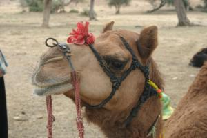
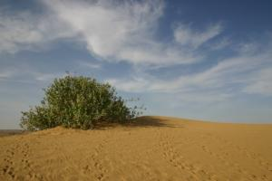
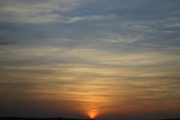
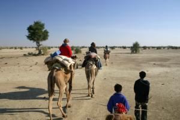
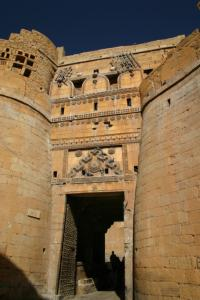

Le 7 décembre 2004,
Aujourd’hui, nous partons pour un "Camel Safari" dans le dsert du Thar. Le circuit a ete directement reserve a l’hotel car Sunny, le sympathique proprietaire, est ne dans un village du desert et nous promet un parcours a l’ecart des circuits touristiques habituels.
Nous partons de l’hotel en Jeep, accompagnes de deux anglaises, Claire et Catherine, qui bouclent un tour du monde commence il y a un an dans le sens inverse du notre. Au bout de quelques dizaines de minutes, nous arrivons dans un village ou nous retrouvons Sunny. Celui-ci nous presente nos guides : Ramesh, 21 ans, Lilu, 17 ans, et Dapu, 15 ans, et nos chameaux. Eve-Laure voyagera avec Rocket, un vieux briscard, leader de la troupe. On m’attribue Johnny Walker, un jeune male de deux ans et demi. Chaque monture, en sus de son cavalier, transporte couvertures, tentes, nourriture, et batterie de cuisine. Nos guides se deplaceront a pied.
 Tres vite, nous nous enfoncons dans le desert et ce qui me frappe le plus est le silence qui y regne. (quand Ramesh arrete de chanter avec sa voix de fosset). L’ondulation provoquee par la marche du chameau peut, parait-il, donner des malaises semblabes au mal de mer. Pour prevenir ce probleme, Ramesh nous donne a chacun une banane a manger. Loin de me donner des nauseesm le deplacement de mon compagnon poilu m’endort. Cependant, ca ne dure jamais longtemps car l’animal beugle pour un oui ou pour un non en passant du grognement au gemissement. Je commence serieusement a me demander si Johnny Walker n’a pas etait baptise de la sorte, a cause de la bouteille de whisky qu’il s’enfile avant chaque safari. Ses plaintes incessantes sont peut-etre dues a l’horrible rose en tissu dont on a orne son museau et dont il voudrait qu’on le debarasse au plus tot.
{kind=link}
Au bout de deux heures, nous nous arretons sous un arbre pour dejeuner. J’observe avec interet nos trois guides preparer le dejeuner. Au menu : chapatis, chou, pommes de terre et nouilles locales.
Recette du chapati
Petrir une pate constituee d’eau, de sel, et de farine de ble sans levain. Prelever des boulettes de pate de la grosseur d’une clementine. Aplatir chaque boulette en la claquant entre les deux paumes jusqu’a obtenir un disque plat d’une quinzaine de centimetres. Faire cuire des deux cotes sur une pierre ou une plaque chauffante.
Nous sympathisons avec Claire et Catherine : difficile de passer de l’accent indien a l’accent anglais ! Puis, nous repartons, nos guides prenant soin de ne laisser aucune trace de notre passage. C’est la premiere fois que nous voyons des indiens avoir des considerations ecologiques ! Esperons que les autres suivent ...
 Le desert nous offre une variete de paysages inattendue. Il s’agit plus de rocailles que de sable, couvertes de plantes grasses, broussailles, arbustes, et petits arbres epineux. Le contraste entre les couleurs ocre des pierres et de la terre, verte de la vegetation, et bleue intense du ciel clairseme de nuages est un regal pour les yeux. Vers quatre heures, nos amis chameleirs nous denichent quelques dunes de sable fin pour y passer la nuit. Rapidement, ils desellent les chameaux, partent a la recherche de bois mort (si, si, dans le desert !) et commencent a preparer le diner.
{kind=link}
 Nous savourons la lumiere du soleil tombant, les ombres qui s’allongent et un festival de couleurs jusqu’a l’apparition des premieres etoiles. Alors que Ramesh est parti pour quelques heures au village le plus proche afin de nous rapporter quelques bieres, un vieil homme au sourire etincelant, a la moustache fournie, et au turban orange apparait. Il se presente en tant que Desert Man et nous propose des boissons fraiches pour quelques dizaines de roupies. Tu parles d’un desert ! On se croirait sur une plage du sud de la France ...
{kind=link}
Nous nous allongeons pour admirer le spectacle des etoiles. Je me rends compte qu’a chaque fois que j’en ai l’occasion, j’en suis emerveille et je trouve soudain incense d’habite une grande metropole generatrice de pollution lumineuse. Ces gens du desert, n’ont peut-etre pas tout le confort, mais au moins ils ont le ciel pour eux toutes les nuits ! Nous decidons donc de ne pas faire monter la tente que nous avons louee, pour dormir a la belle etoile.
Le froid commence a nous saisir et nous pousse a nous rapprocher du feu de camp. J’observe a nouveau nos guides preparer le repas. Je decouvre le lave-vaiselle du desert : les plats sont nettoyes a meme le sable (ca recure et absorbe les graisses) et essuyes avec une serviette sans utiliser la moindre goutte d’eau. Ce soir nous mangeons des pakoras en entree, suivis d’un ragout vegetarien de dahls (lentilles) et pommes de terrem le tout accompagnes de chapatis cuits sur pierre ou a meme les braises.
Recette des pakoras
Petrir une pate constituee d’eau, de farine de dahl, de sel et d’oignons coupes finement. Bien mouiller la pate. Faire frire des petites boulettes de la taille d’un abricot dans de l’huile d’arachide fremissante jusqu’a les faire dorer. Les egoutter et servir chaud.
Ramesh arrive avec les bieres vers la fin de notre repas et nous degustons le breuvage amer tout en ecoutant, sans les comprendre, nos amis indiens discuter entre eux. Desert Man, qui a decide de rester la pour la nuit, essaie d’engager le conversation avec moi dans un anglais plus que sommaire et bien que je ne puisse comprendre non plus son dialecte du desert, proche de l’hindi selon Ramesh, nous communiquons a l’aide de sourires, de hochements de tete et de signes des mains, language universel.
Berce par la melodie et le rythme des discussions entre indiens, le crepitement du feu et peut-etre un peu aussi a cause des effets de la biere, je commence a m’assoupir. Toujours decides, malgre le froid du desert, alors que nos amies anglaises integrent leur tente, Eve-Laure et moi, sous trois couches de vetements et quatre couches de couvertures contemplons les etoiles avant de nous endormir.
Reveille par le froid au milieu de la nuit, j’assiste a un magnifique lever de lune. Impossible de laisser Eve-Laure louper cela ! Je la reveille ... Apres quelques grognements, elle assiste au spectable en silence. A sept heures du matin, l’aube fait son apparition et rend ses couleurs au desert. Meme sentence pour Eve-Laure, memes grognements. Le jour leve, j’essaie de me rendormir. Impossible ! Desert Man, belle-etoiliste comme nous a surement ete reveille par les premiers rayons du soleil. Il entreprend une litanie de mantras hindous entrecoupes de raclements de gorge typiquenent indiens.
Nos guides nous preparent le petit dejeuner. Nous plions le camp sans laisser de traces derriere nous. Adieu Desert Man ! Nous repartons sur nos chameaux. Rocket, l’”etalon” d’Eve-Laure, a fini hier les restes de choux du midi et nous embaume delicatement tout le parcours ...
 Le silence du desert, la sensation de vide offerte par les paysages me fait la sensation d’un aspirateur qui me vide la tete. Cependant, avant de s’envoler, toutes ces pensess tournent une derniere fois dans mon esprit et provoquent diverses emotions qui me traversent. Je repense a plusieurs etapes de ma vie, a certains etres chers disparus, a cette idee de partir voyager un an. Je crois que j’ai deja le mal du pays. Ca va passer ...
{kind=link}
 Le safari se termine en fin de matinee. Nous saluons nos guides et une Jeep nous ramene a la citadelle enchanteresse de Jaisalmer. Le magnifique fort dore nous ouvre ces portes, pour nous permettre de retrouver notre hotel, niche dans un de ses nombreux recoins.
{kind=link}
Nous decidons de passer l’apres-midi a visister la ville. Cette derniere presente de nombreuses “havelis”, magnifiques maisons dont les facades de gres ocre sont tres finement sculptees. Elles furent jadis construites par les notables de la ville (riches marchands, ministres du maharja), a son heure de gloire quand maintes caravanes y faisaient halte.
Demain nous quittons la cite magique pour Jodhpur, celebre pour son fort.
Michaël
-
> JaisalmerPosté par Gaelle le 13 décembre 2004
je retrouve vraiment tout ce que j’ai pu vivre il y a seulement quelques semaines. Il y avait aussi Lilou et Rocket. Je suis tellement loin a present. Merci pour tous ces souvenirs en live ! On se retrouve a Noel, bonne suite. Bisous Gaelle
le 13 décembre 2004
je retrouve vraiment tout ce que j’ai pu vivre il y a seulement quelques semaines. Il y avait aussi Lilou et Rocket. Je suis tellement loin a present. Merci pour tous ces souvenirs en live ! On se retrouve a Noel, bonne suite. Bisous Gaelle -
> JaisalmerPosté le 11 décembre 2004Pauvre Michael, entre les grognements du chameau et ceux d’Eve-Laure, tu es bien entouré... J’ai eu un choc sur la première photo, j’ai trouvé Eve bien changée malgré la fleur qu’elle arborait sur la tête pour avoir l’air plus humaine... la suite m’a rassuré ! Merci de tous ces détails. Sylvain